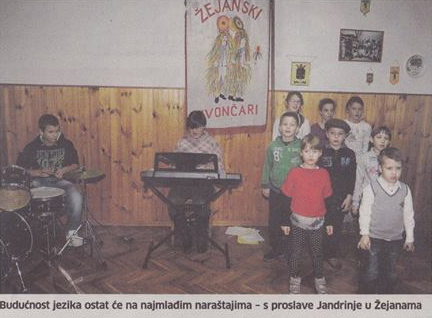
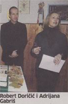

U Hrvatskoj se projekt "Očuvanje vlaškog i žejanskog jezika" provodi od 2007. godine. Razgovarajući prvenstveno s najstarijim govornicima prikupljena je dragocjena lingvistička i etnografska građa, osnovane su lokalne udruge mještana odnosno govornika u Žejanama i Šušnjevici koje provode daljnje aktivnosti projekta – ističe Robert Doričić
Virec ân Žejân ši rem skupa proslavi Jandrinja, pozvao je Robert Doričić, predsjednik Udruge Žejane sve ljude dobre volje da im se pridruže na svetkovini zaštitnika mjesta, svetog Andrije. Niti jedno javno događanje na ovom području posljednjih godina ne može proći bez žejanskog jezika – bilo kroz pjesmu Žejanskih Kntadura, bilo kroz rad školske djece...
 – U Hrvatskoj se projekt "Očuvanje vlaškog i žejanskog jezika" provodi od 2007. godine. Razgovarajući prvenstveno s najstarijim govornicima prikupljena je dragocjena lingvistička i etnografska građa, osnovane su lokalne udruge mještana odnosno govornika u Žejanama i Šušnjevici koje provode daljnje aktivnosti projekta. Već se pet godina održavaju jednodnevne kulturne manifestacije posvećene žejanskom odnosno vlaškom jeziku. U Šušnjevici se već se treću godinu održava dječja igraonica na vlaškom jeziku koju vodi Vivana Brkarić, a od ove se jeseni održava i u Žejanama. Dječju igraonicu na žejanskom jeziku "Žejančići" vodi Adrijana Gabr iš.
Dvije varijante jezika
Sve su ove aktivnosti rezultirale podizanjem svijesti samih govornika i mještana o vrijednosti jezika i potrebi njegova očuvanja. I dok su dosad aktivnosti projekta više pratili i u njima sudjelovali stariji govornici, mještane ali i Žejance koji žive izvan mjesta, veseli činjenica da su im se u posljednje vrijeme pridružili mlađi mještani, kazao je Doričić. Vlaški jezik koji se govori u Šušnjevici i okolici i žejanski jezik dvije su varijante jezika koji je u lingvistici poznat pod nazivom istrorumunjski jezik, spada u istočno-romansku skupinu jezika zajedno s arumunjskim, kojim govore jezične zajednice na području Albanije, Grčke i Makedonije, meglenorumunjskim, jezikom male jezične zajednice u Makedoniji i Grčkoj, i dakorumunjskim jezikom, jezikom iz kojeg se razvio današnji standardni rumunjski jezik.
Dvojezične ploče
 Doričić ističe kako je cilj projekta očuvanja ovog jezika da nositelj budućih aktivnosti na očuvanju jezika bude upravo zajednica govornika vlaškog odnosno žejanskog jezika, a u sklopu toga rađaju se i nove zanimljive ideje poput "dvojezičnih ploča."
– Ideja o turističkim informativnim pločama u selu koje će uključivati tekst na žejanskom jeziku postoji i planirana je njezina realizacija u sklopu aktivnosti udruge "Žejane." Smatram da bi turistička signalizacija u Žejanama svakako doprinijela razvoju područja Opatijskoga krasa u smjeru buduće izletničke destinacije. Ovo područje, u turističkom smislu danas nedovoljno valorizirano, očuvanošću prirodne i bogatstvom kulturne baštine, koje je žejanski jezik dio, to uistinu zaslužuje, zaključio je Doričić.
Žejanci u Portugalu
U sklopu projekta očuvanja vlaškog i žejanskog jezika odrađena je i "turneja" u Portugalu, u gradiću Minde gdje se održao Sajam jezika, jedna od manifestacija koje su se održavale u sklopu međunarodne konferencije posvećene ugroženim jezicima Europe.
– Naš je nastup na Sajmu ostao itekako zapažen. Tome je svakako pridonio naš bogato opremljen štand na kojem su se mogle vidjeti publikacije i nosači zvuka izdani u sklopu projekta, ali i promotivni materijal kojima smo posjetiteljima sajma predstavili kraj odakle dolazimo, kao i zajednički nastup članova "Žejanskih kntadura" i članova KUD-a "Zlatela" iz Kršana. Sudjelovanjem na sajmu, podigli smo razinu informiranosti o ovome jeziku, prikazali segmente bogate hrvatske tradicijske baštine uopće i tako promovirali domovinu. Definitivno se imamo čime ponositi i što predstaviti, kazao je Doričić.
Piše Davor Žic
Snimio Ivica Tomić
December 15, 2013
© 2013 Novi List